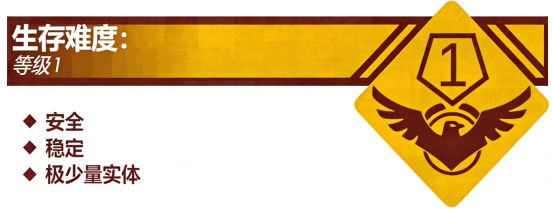

Level 3 - "教室"

描述：

Level 3 是组成 The School Rooms 的最主要部分之一，也是流浪者每天必须到达的层级。此层级存在与 Level 2 相似的性质，学校中也不只存在一个 Level 3，而是存在着至少 30~40 个，每个 Level 3 的布局基本相同，都安有前后两扇门，教室两旁都安有玻璃制成的窗户。
为了方便流浪者理解，S.M.E.G 将 Level 3 划分成三个部分，接下来的文档将会分别介绍它们：
1.讲台区
讲台区位于 Level 3 的前门附近，从前门进入的流浪者可以轻易来到此区域。讲台区一般比普通的地面高一节，但有时候又和普通地面高度相等。靠近讲台区的墙上装有黑板、投影器以及多媒体等装置，而讲台区偏离前门的另一端则是一个讲台（即“老师”平时授课的地方），讲台上会刷新粉笔、文具、大三角板、黑板擦等工具。不建议流浪者在讲台区停留太久，这可能会导致你被“老师”发现后驱逐。
2.座位区
座位区是流浪者在 Level 3 中所能活动的区域，其由一排排整齐的课桌椅组成。流浪者会被“老师”安排坐在座位区中的某一张椅子上，在一般情况下，一张桌子可以容 2 名流浪者坐下，为了方便互相称呼，我们将与你坐在同一张桌子上的那名流浪者称为“同桌”，将坐在你前面或后面的流浪者称为“前桌”以及“后桌”。在少数情况下“老师”可能会安排一名流浪者单独坐一个位置，请尽量远离这名流浪者，因为 ɼƷǩɱ.ʓǭɴ1∎∎。
并且，流浪者需要保持座位区的干净和整洁，若你的座位实在太乱，可能会导致“执勤队员”对你进行“扣分”操作。同时，“老师”会定时安排“值日生”对 Level 3 进行打扫，如果你被选中了，请仔细遵守以下守则，以免遭到“老师”的攻击：
应当：
- 认真使用“扫把”或“拖把”扫地。
- 使用“黑板擦”对黑板进行清洁。
- 定时搬开课桌椅进行仔细清洁。
不应：
- 在做值日时打闹，会引起“老师”的训斥。
- 不认真做值日或者逃避值日。
请记住：做值日的成果会直接影响你在 The School Rooms 中的生存，请各位流浪者务必认真对待！
3.其他区域
其他区域大多位于 Level 3 的侧面或后门附近，这种区域在不同的 Level 3 中呈现为不同的外貌。目前已经发现的设施主要有以下几点：图书角、卫生角、黑板报、考试倒计时等。可能还会有补充，请有发现的流浪者上报给 S.M.E.G 对文档进行补充。
实体：
Level 3 唯一的实体为“老师”，他们一般于接近上课时间后进入 Level 3，有时候，他们可能会透过窗户观察你的一举一动，若感觉有不对劲，请立刻停止你的“危险”行为！
基地、前哨和社区：
R.S.S - "讨论小组"：喜欢在下课后聚在一起讨论上课时学习的题目、校园八卦等，但大多时间聚集在 Level 2，很少时候会持续停留在 Level 3。
S.M.E.G - "课间补给站"：为感到疲劳的流浪者免费提供资源。
除此之外……
你终将会坠入这里。
入口和出口：
入口：在 Level 2 走进写有 x 年 x 班的门即可进入此层级，此出入口是双向的，这代表你也可以通过走出教室的前后门原路返回。
出口：……
上课铃声响了
他环顾四周
这里完全没有了刚才的喧嚣
他瞬间明白了什么
端坐在桌边不再尝试思考
你终将会坠入这里。
和我们一起。